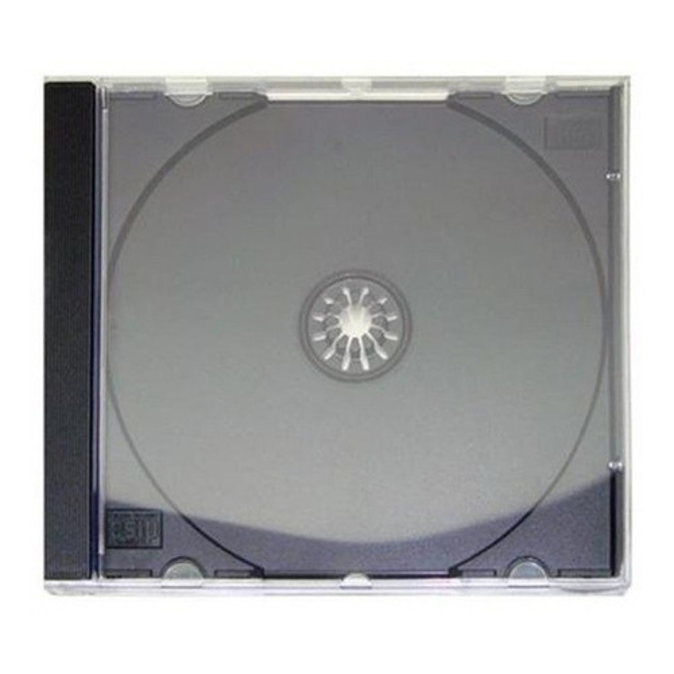

Sobre o sebo só ouvir
Localizado na melhor região da cidade o sebo só ouvir traz para o mercado o que há de melhor para o seus ouvido. Fundado em 2022, o sebo só ouvir já é destaque na cidade e conquista novos clientes a cada dia.
Nossa missão é: "Proporcionar a melhor experiência de áudio e álbuns completos para nossos consumidores e para os amantes de música" .
Oferecemos um ótimo atendimento, variedade em nossas estantes e preços relativamente baixos para álbuns de grandes bandas antigas.
Nosso estabelecimento
Nosso estabelecimento se encontra na melhor região de sebos da cidade
Estilos
- Rock
- Alternativo
- Indie
- New metal
- Psicodélico
- Grunge